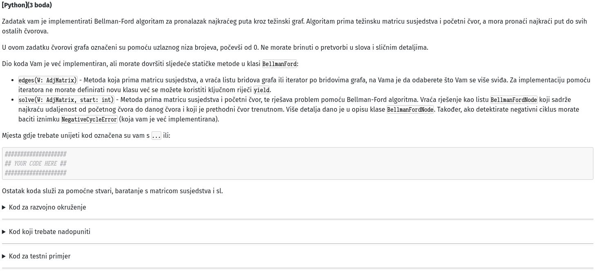
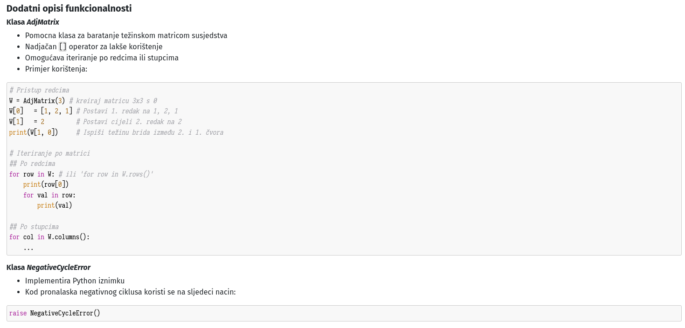
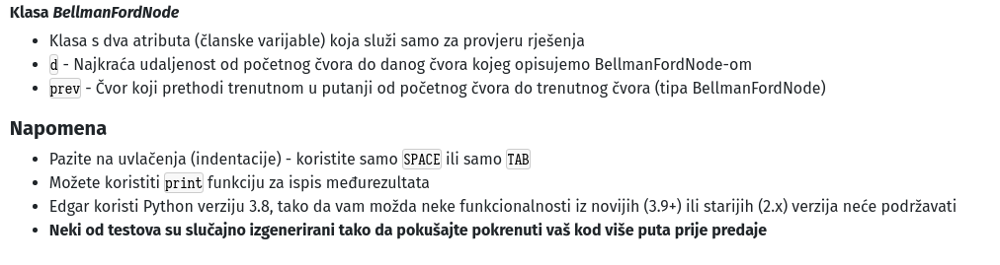

Kod za razvojno okruzenje:
import sys
import array
from typing import Union, List, Iterable
class ArrView:
"""
Helper class used for indexing the adjacency matrix.
Serves as a view of a row, column or any part of the adjacency matrix, although
it can be used for any 1D array/list.
"""
def __init__(self, arr: array.array, arr_slice: Union[slice, range]):
self._arr = arr
if isinstance(arr_slice, slice):
self._slice_range = range(*arr_slice.indices(len(self._arr)))
elif isinstance(arr_slice, range):
self._slice_range = arr_slice
else:
raise NotImplementedError("Must provide a slice or range object to the ArrView constructor")
def __len__(self):
"""
Return the length of the view.
"""
return len(self._slice_range)
def __getitem__(self, pos: Union[int, slice]):
"""
Method to override indexing for the view. Fetches the values from the underlying array.
Args:
pos (int | slice): Position of the value/values to fetch.
Returns:
int: Value at the 'pos' if it was an int.
or
ArrView: A subview if 'pos' was a slice.
If passed an int, it will return a value at the specified position.
If passed a slice object, it will return another ArrView object which will be a subview
into the view, but will still use the underlying array to fetch the values. If passed
anything else will return NotImplemented.
"""
if isinstance(pos, int):
return self._arr[self._slice_range[pos]]
if isinstance(pos, slice):
return ArrView(self._arr, self._slice_range[pos])
return NotImplemented
def __setitem__(self, pos: Union[int, slice], val: Union[int, Iterable[int]]):
"""
Set the value/values at the specified position/positions.
Args:
pos (int | slice): Position(s) of value/values to set.
Sets the values in the underlying array.
If passed an int as the position argument, it expects the value argument to be an int as well
and sets the value at the specified position.
If passed a slice and iterable of ints as value (i.e. list of ints), sets the values
indexed by the slice to the values provided in the 'val' argument.
If passed a slice as position and int as value, sets all of the elements indexed by the
slice to the specified int value. Otherwise, raises an exception.
"""
if isinstance(pos, int):
self._arr[self._slice_range[pos]] = val
elif isinstance(pos, slice):
val_range = self._slice_range[pos]
if isinstance(val, int):
val = [val] * len(val_range)
for i, v in zip(val_range, val):
self._arr[i] = v
else:
raise NotImplementedError('ArrView can only be indexed by an "int" or "slice" object.')
def __iter__(self):
"""
Enables iteration over the view (for-each style).
Return an iterator over the array view. Enables the view to be used in
a for-each loop, i.e. "for val in view: ... ".
"""
for i in self._slice_range:
yield self._arr[i]
def as_list(self):
"""
Return the view as a list of integers.
"""
return [v for v in self]
def __str__(self):
"""
Return the string representation of the view, which is the representation
of the list with the same values.
"""
return str(self.as_list())
class AdjMatrix:
"""
Helper class which implements a weighted adjacency matrix.
Should hold zeros if there is no edge between nodes at an index
or the weight of the edge if there is one.
n_nodes (int): Number of nodes in the graph.
Indexing with regular integers returns ArrView of rows (matrix[0] -> 0-th row).
Indexing with tuples returns the values at the position in the matrix
(matrix[0, 1] -> weight of the edge at position (0, 1)).
"""
def __init__(self, n_nodes: int):
self._data = array.array('i', [0] * (n_nodes * n_nodes))
self.n_nodes = n_nodes
def __len__(self):
"""
Get the total number of elements in the matrix.
"""
return self.n_nodes * self.n_nodes
def getColumn(self, col_ind: int):
"""
Get a column as a view.
Args:
col_ind (int): Index of the column.
Returns:
ArrView: View of the column.
"""
return ArrView(self._data, slice(col_ind, None, self.n_nodes))
def getRow(self, row_ind: int):
"""
Get a row as a view.
Same as A[row_ind].
Args:
row_ind (int): Index of the row.
Returns:
ArrView: View of the row.
"""
n = self.n_nodes
return ArrView(self._data, slice(row_ind * n, (row_ind + 1) * n))
def getEdgeWeight(self, row_ind: int, col_ind: int) -> int:
"""
Get the weight of the edge between the row_ind and col_ind nodes.
Weight of the edge row_ind->col_ind.
Args:
row_ind (int): Row index (source node).
col_ind (int): Column index (target node).
"""
return self._data[row_ind * self.n_nodes + col_ind]
def __getitem__(self, pos: Union[int, tuple]):
"""
Enables indexing into the matrix with integers, tuples or slices.
Args:
pos (int | tuple): Position of the value/values to fetch.
Returns:
int | ArrView: Value/values at the specified position/s.
If the argument is an int, fetches pos-th row, equivalent to getRow(pos).
If the arugmnet is a tuple, fetches the weight of the edge between pos[0] and pos[1].
Otherwise returns NotImplemented.
"""
if isinstance(pos, int):
return self.getRow(pos)
if isinstance(pos, tuple):
i, j = pos
return self.getEdgeWeight(i, j)
return NotImplemented
def __setitem__(self, pos: Union[int, tuple], val: Union[int, Iterable[int]]) -> None:
"""
Enables setting values by index.
Args:
pos (int, tuple): Position/s to set in the underlying array.
val (int, Iterable[int]): Value/s to set.
If the pos argument is a tuple, then the val should be an int and
the method will set the value at the specified position in the matrix
(weight of the edge pos[0]->pos[1]).
If the pos is an int then sets the whole row, with ArrView
handling the logic of setting the values.
Otherwise, raises a NotImplemented error.
"""
if isinstance(pos, tuple):
i, j = pos
self._data[i * self.n_nodes + j] = val
elif isinstance(pos, int):
self.getRow(pos)[:] = val
else:
raise NotImplementedError('AdjMatrix can only be indexed by an int, tuple or slice object.')
def columns(self):
"""
Fetches an iterator over the columns of the matrix.
Enables "for col in A.columns(): ...".
"""
for i in range(self.n_nodes):
yield self.getColumn(i)
def rows(self):
"""
Fetches an iterator over the rows of the matrix.
Enables "for row in A.rows(): ...".
"""
for i in range(self.n_nodes):
yield self.getRow(i)
def __iter__(self):
"""
Delegates to the 'rows' method.
"""
return self.rows()
def __str__(self) -> str:
"""
Fetch the string representation of the matrix as a list of lists.
"""
return str([row.as_list() for row in self])
class BellmanFordNode:
"""
Helper class for solving problems with the BellmanFordAlgorithm.
d (int): The current distance to a node.
prev (BellmanFordNode): The previous node in the solution graph.
"""
def __init__(self, d_value=sys.maxsize, prev_node=None):
self.d = d_value
self.prev = prev_node
class NegativeCycleError(Exception):
"""Class used to raise an error when a negative cycle is present in a graph"""
pass
Kod koji treba nadopuniti:
class BellmanFord:
"""
Class implementing static methods for solving graph problems
using the Bellman-Ford algorithm.
"""
@staticmethod
def edges(W: AdjMatrix):
"""
Fetch a iterable over the edges of the graph from its weighted adjacency matrix.
Args:
W (AdjMatrix): weighted adjacency matrix.
Returns:
Iterable[...] | Iterator: An iterable of any representation of an edge or an iterator.
"""
####################
## YOUR CODE HERE ##
####################
# HINT: Koristite 'yield' operator ili izradite listu
# bridova i nju vratite. Na Vama je da odaberete.
@staticmethod
def createInitialSolution(n_nodes: int) -> List[BellmanFordNode]:
"""
Create the list which will hold the final solution to the problem
we are solving with the Bellman-Ford algorithm and populate it with initial values.
Args:
n_nodes (int): Number of nodes in the graph for which we are solving.
Returns:
List[BellmanFordNode]: The starting point of the algorithm.
"""
return [BellmanFordNode() for _ in range(n_nodes)]
@staticmethod
def solve(W: AdjMatrix, start: int) -> List[BellmanFordNode]:
"""
Solve the specified problem using the Bellman-Ford algorithm.
Args:
W (AdjMatrix): The weighted adjacency matrix of the graph for which we are solving.
start (int) : The starting node.
Returns:
List[BellmanFordNode]: Solution to the problem, i.e. the list of
distances to the nodes from the starting point
and which nodes are chosen as predecessors for each node.
Throws:
NegativeCycleError: If there is a negative cycle in the graph.
"""
D = BellmanFord.createInitialSolution(W.n_nodes)
####################
## YOUR CODE HERE ##
####################
# HINT: Iteracija po bridovima se mora moci pozivati na sljedeci nacin:
# "for ... in BellmanFord.edges(W):"
# Gdje "..." ovisi o tome kako implementirate staticku metodu edges i kako
# zelite da Vam se varijabla/e zove/u.
Kod za testni primjer:
def revPath(solution: List[BellmanFordNode], to_node: int) -> List[int]:
curr = to_node
path = []
while curr is not None:
path.append(curr)
node = solution[curr]
curr = node.prev
return path
W = AdjMatrix(9)
W[0] = [0, 1, 0, 0, 0, 0, 0, 0, 0]
W[1] = [0, 0, 0, 0, -5, 0, 0, 0, 0]
W[2] = [0, 0, 0, 1, 0, 0, 1, 1, 0]
W[3] = [2, 0, 0, 0, 4, 0, 0, 0, 1]
W[4] = [0, 0, 0, 0, 0, 4, 0, 0, 0]
W[5] = [0, 0, 0, 0, 0, 0, 0, 0, 0]
W[6] = [0, 0, 0, -1, 0, 0, 0, 0, 0]
W[7] = [0, 0, 0, 0, 0, 0, -1, 0, 0]
W[8] = [0, 0, 0, 0, 0, 1, 0, 0, 0]
D = BellmanFord.solve(W, 2)
assert revPath(D, 5) == [5, 8, 3, 6, 7, 2]